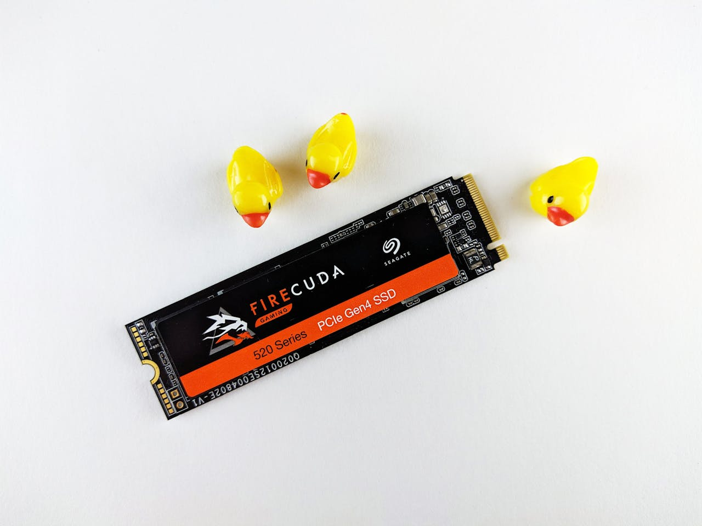
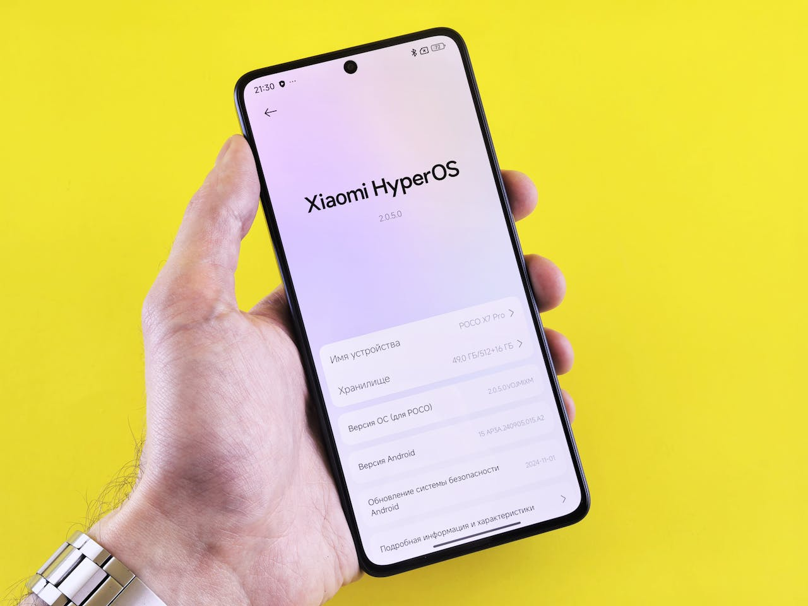

Fique por dentro de tudo que acontece no mundo da tecnologia.
Atualização do Windows 11 está causando falhas graves em SSDs
A mais recente atualização de segurança do Windows 11, identificada como KB5063878 para a versão 24H2, parece estar causando falhas críticas em SSDs e outros dispositivos de armazenamento. Diferentes relatos apontam para um problema durante a transferência de um grande volume de arquivos. Nesses casos, as unidades de armazenamento não são mais listadas pelo sistema.

As informações vêm de investigações e testes feitos por usuários, como Necoru_cat no X e o site NichePCGamer, e ainda não foram confirmadas oficialmente pela Microsoft ou por fabricantes de hardware.O problema parece acontecer especificamente durante operações de gravação de dados contínuas e intensas, geralmente quando o volume excede 50 GB. A falha foi notada em cenários comuns, como ao atualizar jogos como Cyberpunk 2077 e Honkai: Star Rail, citados pelos usuários nas redes sociais.
Novo top da Xiaomi tem preços vazados; veja o que já sabemos
A linha Xiaomi 15T deve ser lançada em breve em mercados estratégicos, e detalhes sobre a política de preços dos dispositivos foram revelados em publicação feita pelo perfil do vazador Sudhanshu Ambhore. No total, serão dois novos modelos: o 15T e 15T Pro.

Veja abaixo o preço esperado para os celulares:
Xiaomi 15T (12 GB de RAM e 256 GB de armazenamento): € 649 (cerca de R$ 4.108 em conversão direta);
Xiaomi 15T Pro (12+256 GB): € 799 (~R$ 5.057);
Xiaomi 15T Pro (12+512 GB): € 899 (~R$ 5.690).
Ambos devem ser vendidos em três opções de cores: preto, cinza e dourado. Os preços divulgados são referentes ao mercado europeu, mas podem variar de acordo com a região em que os celulares forem vendidos.
Qual é a melhor personalidade do ChatGPT-5? Veja as diferenças entre cada opção
O GPT-5 trouxe cinco personalidades diferentes para a Inteligência Artificial para atender às necessidades de todos os públicos que utilizam o chat. Entre elas, os usuários podem escolher conversar com uma IA calorosa e familiar, sarcástica, acolhedora, direta ou nerd diretamentenas configurações do chat e alternar entre elas sempre que desejar.
A personalidade padrão do GPT-5 foi ajustada para ser calorosa e familiar, tornando a interação mais acessível e próxima do usuário. Ela reconhece pequenas situações e comentários durante a conversa por meio de expressões, como “Boa pergunta” ou “Ótimo começo”.
No entanto, a OpenAI afirma que, mesmo com esses incentivos, o GPT-5 continua com uma redução na bajulação comparado ao modelo GPT 4o.Assim, essa personalidade é ideal para interações do dia a dia, devido ao tom amigável e natural, sem exageros na formalidade ou no humor.